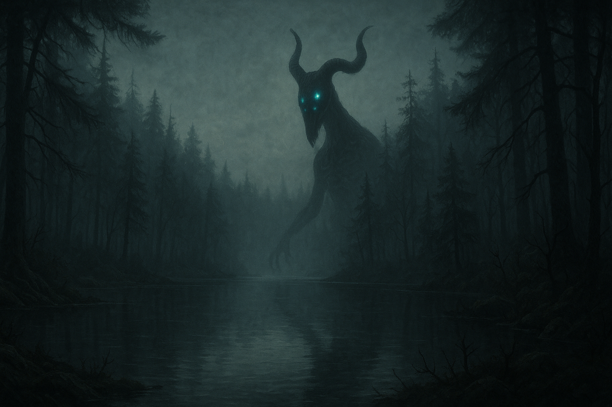

Dérèglement temporelle
À partir de la quête cinq, la nuit à Grossevache change d'une manière inquiétante et indéniable. Là où autrefois le crépuscule plongeait l'île dans un calme trompeur, il ne reste plus qu'une sensation viscérale de malaise qui s'infiltre dans les âmes les plus robustes. Désormais, chaque coucher de soleil est le signal d’un monde en transformation, où le ciel, autrefois paré d’étoiles paisibles, vire à une teinte rouge sang. Les nuages s’effilochent comme des lambeaux de chair, et le silence, au lieu de rassurer, devient assourdissant, saturé par une tension palpable.
Le brouillard qui entoure Grossevache, habituellement épais et stagnant, prend alors une dimension presque vivante. Il se met à onduler et se contracter, comme s’il respirait, et parfois, il laisse entrevoir des silhouettes effrayantes : des géants minces et déformés, connus sous le nom de Marcheurs de Nuit (Night Walker). Ces créatures immenses, aux membres allongés et à la peau noire comme de l’encre, se déplacent lentement, à peine visibles dans les recoins brumeux des forêts et le long des rives. Leur présence est une énigme, car ils ne semblent pas attaquer, mais leur simple vue déclenche une terreur primitive chez ceux qui les aperçoivent.
Certains villageois prétendent les avoir vus marcher en silence, comme des ombres décharnées, à la lisière des bois. D’autres chuchotent que les Marcheurs sont les âmes perdues d’anciens habitants de Grossevache, piégés entre le monde matériel et celui du Shadowfell, condamnés à errer pour l’éternité. Lorsque la cloche de minuit sonne, leur approche est inévitable, marquée par une chute brutale de la température et un vent sifflant qui semble murmurer des mots oubliés.
Ceux qui se risquent à rester dehors trop longtemps après la tombée de la nuit sentent le poids d'une présence inconnue les suivre, invisible mais oppressante. Le village de Grandarbre, bien qu'illuminé par sa lumière artificielle, n'est plus un refuge. Des lueurs étranges apparaissent aux fenêtres, des formes floues se déplacent dans les ombres, et chaque coup de vent porte avec lui des rires étouffés ou des pleurs lointains.
Le cycle naturel de l'île semble se dérégler, comme si Grossevache elle-même réagissait à cette transformation nocturne, se contractant sous la menace de ces apparitions. Le monde entier semble en proie à une lente désintégration, et à chaque nuit qui passe, l’île s’enfonce davantage dans un cauchemar éveillé.
Ce n’est pas tout : la durée de la nuit varie étrangement selon les régions de Grossevache. Voici un aperçu du temps nocturne dans chaque zone :
| Région | Durée de la nuit (18h-6h) |
|---|---|
| Les Plaines de la Joie (A) | 24h |
| Les Marécages de l’Ouest(B) | 36h |
| La Contrée Désolée du Nord (C) | 48h |
Ce phénomène mystérieux fait en sorte que le temps semble s'écouler différemment selon la région. Bien qu'il ne s'agisse pas réellement d'un voyage dans le temps, la vitesse à laquelle tout se déroule varie, donnant l’impression que le temps passe plus lentement ou plus rapidement selon l'endroit où l’on se trouve. Cependant, ce dérèglement temporel a ses limites : il est impossible de lancer des sorts ou d’influencer magiquement une région depuis une autre.
| Région | Facteur de ralentissement | Valeur de 1 heure |
|---|---|---|
| Les Plaines de la Joie (A) | 0.5 | 2 heures (A) |
| Les Marécages de l’Ouest (B) | 0.3 | 3 heures (B) |
| La Contrée Désolée du Nord (C) | 0.25 | 4 heures (C) |
Ainsi, dans les Plaines de la Joie, 1 heure "réelle" équivaut à 2 heures passées dans cette région, tandis que dans la Contrée Désolée du Nord, la même heure équivaut à 4 heures vécues. Cela permet un déplacement limité dans le temps selon la région, mais sans altérer véritablement le flux temporel global.
Quand un personnage traverse une frontière entre deux régions, il entre immédiatement dans la temporalité de cette nouvelle zone. Le temps dans cette région ne suit pas le même rythme que dans celle qu'il vient de quitter, ce qui peut créer une sensation de décalage ou de confusion pour le PJ. Cependant, cela ne signifie pas qu'il voyage dans le temps, simplement que la vitesse à laquelle il vit les heures change.
Par exemple : Si un PJ quitte les Plaines de la Joie (A) après y avoir passé 4 heures réelles, (soit 8 heures vécues) et entre dans les Marécages de l’Ouest (B), il se retrouvera dans un endroit où ces 4 heures réelles ne correspondent à 12 heures vécues. Il peut ainsi avoir l'impression d'être "en avance" ou "en retard" par rapport à son expérience précédente.
En entrant dans une nouvelle région, les PJ se synchronisent immédiatement au rythme du temps de cette zone. Ils vivent à la vitesse locale à partir de leur entrée dans cette nouvelle région, même si cela signifie que leurs horloges internes peuvent se sentir décalées.
Pour un maître de jeu (DM), suivre l’heure à Grossevache avec son système temporel complexe peut sembler intimidant, mais avec une méthode simple et organisée, tu pourras gérer efficacement les transitions entre les régions et toujours savoir quelle heure il est.
Comprendre la Base Temporelle
Le point de départ est l’heure réelle, c'est-à-dire l'heure de référence universelle pour toute l’île. Par exemple, 18h est l’heure à laquelle la nuit commence partout sur Grossevache. Chaque région vit cette heure à un rythme différent selon son facteur de ralentissement temporel. Cela signifie que, bien que l'heure réelle soit la même pour toute l’île, les habitants et les PJ dans chaque région ressentent le passage du temps à des vitesses différentes.
Utiliser un Suivi de Temps
Pour savoir l’heure à tout moment, il te suffit de suivre l’heure réelle et d’appliquer des multiplicateurs pour chaque région. Tu peux utiliser un simple tableau pour garder une trace du temps dans chaque région en fonction de l'heure réelle.
